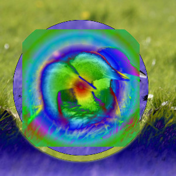

The “Inversion” group contains layer modes that invert the colors in one way or another.
- Difference
-
Figure 8.31. Example for layer mode “Difference”

Top layer at 100% opacity using “Difference” mode.
Difference mode subtracts the pixel value of the upper layer from that of the lower layer and then takes the absolute value of the result. This mode can be used to compare two layers. If they are identical the difference is zero (black), otherwise the result shows the variance of the tonal values in each pixel. A white foreground inverts the background whereas a white background inverts the foreground.
The mode is commutative; the order of the two layers doesn't matter.
- Exclusion
-
Exclusion mode causes inversion to the other layer for bright regions, very dark regions change nothing at all. In this way this mode resembles Difference mode. However, medium gray values greatly decrease contrast of the respective other layer, in extreme cases up to zero.
The mode is commutative; the order of the two layers doesn't matter.
- Subtract
-
Subtract mode subtracts the pixel values of the upper layer from the pixel values of the lower layer. The resulting image is normally darker. You might get a lot of black or near-black in the resulting image.
- Grain extract
-
Figure 8.34. Example for layer mode “Grain extract”

Top layer at 100% opacity using “Grain Extract” mode.
Grain extract mode is supposed to extract the “film grain” from a layer to produce a new layer that is pure grain, but it can also be useful for giving images an embossed appearance. It subtracts the pixel value of the upper layer from that of the lower layer and adds 0.5.
- Grain merge
-
Figure 8.35. Example for layer mode “Grain merge”

Top layer at 100% opacity using “Grain Merge” mode.
Grain merge mode merges a grain layer (possibly one created from the “Grain extract” mode) into the current layer, leaving a grainy version of the original layer. It does just the opposite of “Grain extract”. It adds the pixel values of the upper and lower layers together and subtracts 0.5.
- Divide
-
Divide mode divides each pixel value in the lower layer by the corresponding pixel value of the upper layer (while avoiding dividing by zero). The resulting image is often lighter, and sometimes looks “burned out”.